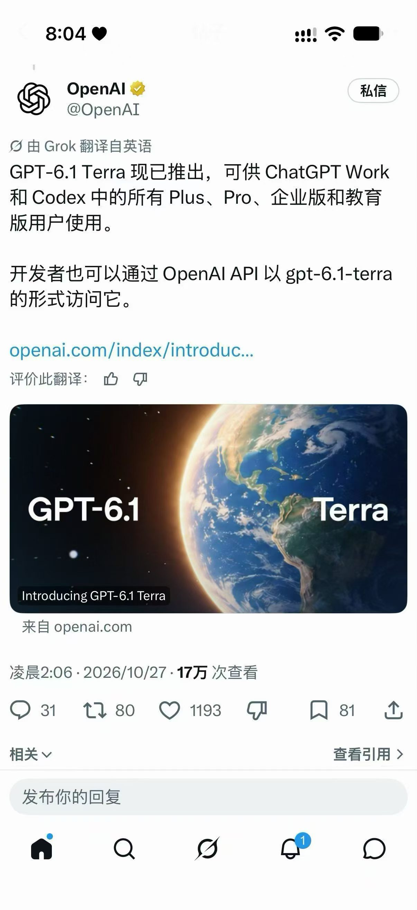
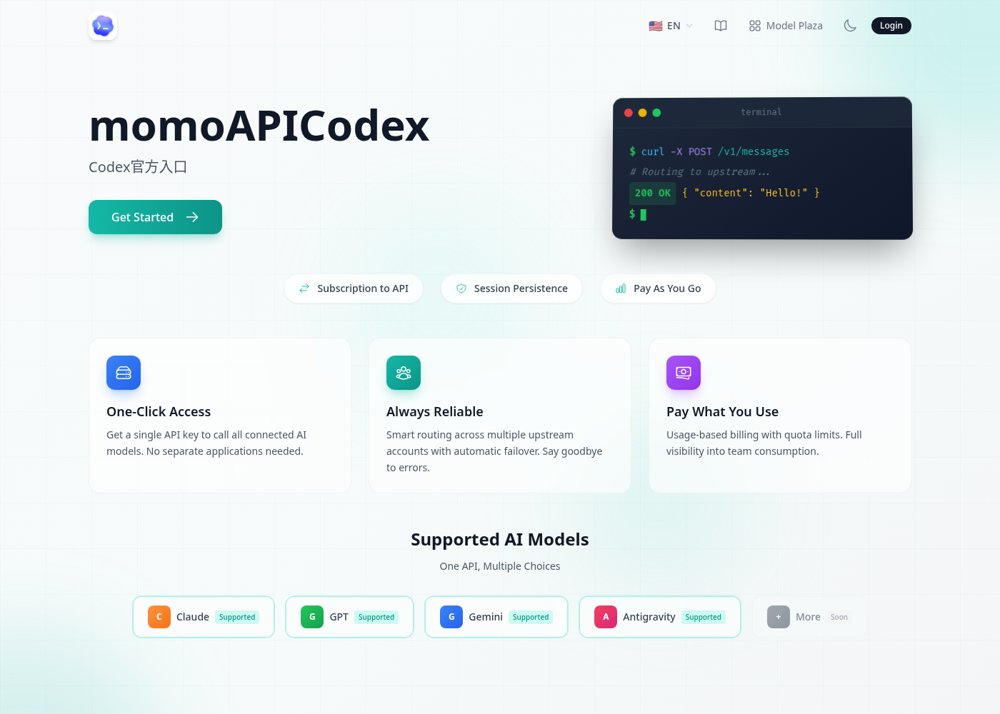

中文说明 · 关键词「gpt-5官网」· 2026-10
GPT-5官网怎么进？向GPT-6过渡说明
社区检索说明 · 非 OpenAI 仿官网 · TryGPT / TryAllAPI / MomoAI
写在前面
你搜「gpt-5官网」，多半是想尽快搞清楚：哪里能安全地体验或调用相关模型，而不是点进一堆仿站、下载站或诱导跳转页。下面用中文把检索意图、命名差异、可用路径和风险一次说清。建议收藏本页与同系列内链，遇到改名或列表更新时可以对照复核，避免只凭搜索结果首页的广告位做决定。

命名提示：社区检索常出现 GPT-6、GPT-6.0、GPT-6.v、GPT-6.1（Terra / Sol / Luna / Astra）等写法。
正式名称以 OpenAI 当日公开文档与产品列表为准。本站是社区向中文说明，不是「GPT6.cn」一类仿官网，也不代表 OpenAI 官方中文站。
1. 「gpt-5官网」与向 GPT-6 过渡
GPT-5 仍是很多用户的主力讨论对象；当检索开始大量出现 GPT-6 / 6.0 / 6.v / 6.1 时，通常意味着你想试用更新模型或对比差异。「GPT-5 官网」同样应指向 ChatGPT / API 等正规入口，而不是仿冒中文域名。
过渡不必一步到位：在同一对话站用同一批提示词分别跑 GPT-5 档与更新条目，对比长文质量、代码一次成功率、工具调用稳定性与价格，再决定是否切换业务流量。

2. 从 GPT-5 升级体验的建议
- 先在同一对话站分别试 GPT-5 档与更新的 GPT-6 相关条目（若已上架）
- 对比：长文质量、代码一次成功率、工具调用稳定性
- 再决定网页继续用，还是把业务切到 API
3. 试用 GPT-5 / 更新模型的入口
无论你还在用 GPT-5，还是想试更新系列，都可以从这里进入：
也可在店铺浏览相关服务说明：https://wzyp.cn/shop/maynorai（仅供参考，非强制购买）。

4. 操作步骤
4.1 网页对话（TryGPT）
- 打开 https://trygpt.asia/
- 登录后在模型列表选择与 GPT-6 / 相关的当日条目
- 用真实任务试一轮（写作或小段代码均可）
4.2 全模型 API（TryAllAPI）
- 打开 https://tryallapi.com/
- 创建 API Key，确认精确 model id
- 按 OpenAI 兼容协议调用（base_url 以站点文档为准）
4.3 包月套餐（MomoAI）
- 打开 https://momoai.asia/
- 对照套餐说明与可用模型后再订阅
5. 常见问题 FAQ
GPT-5 还能用吗？
多数聚合站会同时保留多代模型；能否调用以当日列表与账户权限为准。
GPT-5 和 GPT-6 有什么区别？
社区讨论常围绕质量、速度、工具调用与价格。请用同一批提示词 A/B 对比，不要只看标题党。
一定要立刻上 GPT-6 吗？
不一定。业务稳定且 GPT-5 已够用时，可等额度与价格更清晰再迁。
GPT-5 官网入口在哪？
正规产品入口是 ChatGPT / API；国内可用网页或兼容网关作为补充路径。
有中文官网下载吗？
主流仍是网页与 API。警惕「GPT-5 绿色版」一类下载站。
免责声明
- 文中站点为第三方服务，不等于 OpenAI 官方。
- 模型是否上架、价格与配额，以各站当日页面为准。
- 本指南不含联盟推广参数（无 aff / 返佣 query）。
- 请自行评估账号安全、数据合规与费用风险；警惕仿官网与恶意「下载站」。
- 本页不提供、不承认任何「GPT6.cn」仿官网声称。